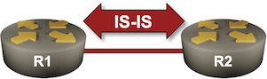

IS-IS on Point-to-Point Links
In the Configure IS-IS Routing for IPv4 lab exercise, I told you to configure the links as point-to-point links and promised a detailed explanation in a follow-up lab exercise. We got that far; let’s see why point-to-point IS-IS links are strongly preferred on point-to-point Ethernet interfaces.
We’ll use the simplest possible lab topology to keep things simple: two routers connected with a single link.

Device Requirements
Use any device supported by the netlab IS-IS configuration module.
Starting the Lab
You can start the lab on your own lab infrastructure or in GitHub Codespaces (more details):
- Change directory to
basic/3-p2p - Execute netlab up
- Log into lab devices with netlab connect
You’ll get a lab with IPv4 addresses and minimal IS-IS configurations on all devices.
Point-to-Point and Multi-Access Links
Like OSPF, IS-IS supports point-to-point (P2P) and multi-access links. Point-to-point links were traditionally used on P2P WAN links; all other media types (LAN, but also multi-access WAN like Frame Relay) used multi-access links. That’s still the default behavior you get on most platforms.
Multi-access links have several drawbacks when compared to point-to-point links:
- The routers on a multi-access link must elect1 a Designated Intermediate System2, prolonging the adjacency establishment process3. Unlike OSPF, there is no Backup DIS in IS-IS; routers connected to a multi-access link elect a new DIS when the current one is gone4.
- The IS-IS LSP database contains extra objects. Instead of point-to-point links between the routers, the LSPDB contains pseudonode LSPs (originated by DIS5) describing LAN links6. For example, our simple topology would result in the following LSPDB objects7:
The LSP database with a pseudonode LSP
┌────────┐ ┌────────┐ ┌────────┐
│r1.00-00├───┤r2.8e-00├───┤r2.00-00│
└────────┘ └────────┘ └────────┘
- Recovery from transmission errors takes longer on LAN links. There are no retransmissions in IS-IS; routers realize there’s a problem when the DIS sends a list of its LSPDB contents (CSNP packets), usually every 10 seconds.
On the other hand, using pseudonode LSPs on true multi-access links makes perfect sense. They reduce the number of links in the topology graph8, resulting in faster SPF runs.
Exploring Multi-Access Database Structures
It’s time to get our hands dirty. Log into one of the lab devices and examine its IS-IS database. You should get a printout similar to this one. Please note an extra LSP (the description of the LAN subnet generated by R2):
The LSP database with a pseudonode LSP
r1# show isis database
Area Gandalf:
IS-IS Level-2 link-state database:
LSP ID PduLen SeqNumber Chksum Holdtime ATT/P/OL
r1.00-00 * 92 0x00000005 0xc392 1164 0/0/0
r2.00-00 92 0x00000005 0x60ef 1167 0/0/0
r2.74-00 51 0x00000003 0x5202 1239 0/0/0
Let’s inspect the extra LSP. It looks very similar to an OSPF type-2 LSA:
- It describes links from the LAN segment to individual routers.
- Unlike OSPF type-2 LSA, it does not contain the LAN prefix.
The pseudonode LSP details
r1# show isis database detail r2.74-00
Area Gandalf:
IS-IS Level-2 link-state database:
LSP ID PduLen SeqNumber Chksum Holdtime ATT/P/OL
r2.74-00 51 0x00000003 0x5202 1130 0/0/0
Extended Reachability: 0000.0000.0002.00 (Metric: 0)
Extended Reachability: 0000.0000.0001.00 (Metric: 0)
Tip
The core IS-IS data structures are protocol-agnostic. Protocol-specific prefixes are advertised as part of the router LSP.
Not surprisingly, the routers connected to the LAN segment advertise their links to the LAN segment and the LAN IPv4 prefix. This is what R1 has to say:
The router LSP details
r1# show isis database detail r1.00-00
Area Gandalf:
IS-IS Level-2 link-state database:
LSP ID PduLen SeqNumber Chksum Holdtime ATT/P/OL
r1.00-00 * 92 0x00000006 0xc193 1780 0/0/0
Protocols Supported: IPv4
Area Address: 49.0001
Hostname: r1
TE Router ID: 10.0.0.1
Router Capability: 10.0.0.1 , D:0, S:0
Extended Reachability: 0000.0000.0002.74 (Metric: 10)
IPv4 Interface Address: 10.0.0.1
Extended IP Reachability: 10.0.0.1/32 (Metric: 10)
Extended IP Reachability: 10.1.0.0/30 (Metric: 10)
Tip
It’s worth noting that the router LSP does not specify the interface on which a particular IP prefix is; it just claims that the router knows how to reach the prefix with the specified cost. That’s enough to find the optimum paths to all prefixes in the network9
Using Point-to-Point Links
Core Ethernet links in modern networks are usually point-to-point links10 between routers11. Modeling those links as multi-access networks makes no sense, yet most IS-IS implementations use that approach on all LAN interfaces.
Use an interface configuration command similar to isis network point-to-point to tell IS-IS to treat an interface like a point-to-point link. Do that on both routers in your network.
Tip
While changing the interface type, you might observe logging/error messages similar to p2p hello on non p2p circuit or lan hello on non broadcast circuit12.
Warning
If you use Cisco IOSv on one of the routers and some other network operating system on the other router, you SHOULD configure isis three-way-handshake ietf on Cisco IOSv interfaces (more details) because someone thought it prudent to keep the pre-standard protocol as the default setting for at least a decade after the RFC was published. Cisco IOS XE uses the IETF 3-way handshake as the default protocol.
Let’s inspect the IS-IS topology database after the change. As expected, it contains two LSPs (one per router).
The LSP database with a point-to-point link
r1# show isis database
Area Gandalf:
IS-IS Level-2 link-state database:
LSP ID PduLen SeqNumber Chksum Holdtime ATT/P/OL
r1.00-00 * 92 0x00000008 0x5d6a 1598 0/0/0
r2.00-00 92 0x00000009 0xd4ec 1558 0/0/0
Tip
For a few seconds, you will continue to see the “empty” DIS-originated network LSP in the LSP databases. If you manage to inspect its details before it disappears, you’ll notice it no longer claims to have connections to R1 and R2. The network LSP should be removed (aged out) from the LSP databases in a few seconds; it might persist longer in the LSP database of the router originating it13.
The LSPs describe the direct connection between the routers. For example, R1 claims it’s directly connected to R214:
The router LSP with a point-to-point link to another router
r1# show isis database detail r1.00-00
Area Gandalf:
IS-IS Level-2 link-state database:
LSP ID PduLen SeqNumber Chksum Holdtime ATT/P/OL
r1.00-00 * 92 0x00000008 0x5d6a 1533 0/0/0
Protocols Supported: IPv4
Area Address: 49.0001
Hostname: r1
TE Router ID: 10.0.0.1
Router Capability: 10.0.0.1 , D:0, S:0
Extended Reachability: 0000.0000.0002.00 (Metric: 10)
IPv4 Interface Address: 10.0.0.1
Extended IP Reachability: 10.0.0.1/32 (Metric: 10)
Extended IP Reachability: 10.1.0.0/30 (Metric: 10)
Next:
Three-Way Handshake
The original IS-IS specifications used a simple HELLO protocol on point-to-point links15: whenever a router received an IS-IS Hello (IIH) from an adjacent router, it assumed the adjacent router could be reached, resulting in miserable failures on unidirectional links16.
That hurdle was removed with the three-way handshake defined in RFC 5303. That RFC specifies a new IS-IS option (Point-to-Point Three-Way Adjacency) that contains the System ID of the adjacent device, allowing IS-IS routers to verify they have a two-way communication.
Modern IS-IS implementations use the three-way handshake by default. Still, you might have to turn it off to interoperate with an older device (or a device with ancient defaults) with an interface command similar to no isis three-way-handshake17.
Warning
A mismatch in the three-way handshake setting could have bizarre results. For example, turning it off on an FRRouting device results in one of the neighbors having a fully operational IS-IS adjacency while, at the same time, the other neighbor claims it can see no neighbors. To make matters worse, that often happens only after the IS-IS adjacency has been lost and would have to be re-established.
As the last task in this lab, try out how your devices react to a three-way handshake mismatch (assuming you can configure it):
- Turn it off on one of the routers.
- Clear the IS-IS adjacency with a command similar to clear isis neighbor
- Enjoy the confusing logging messages.
Next:
Reference Information
Lab Wiring
| Origin Device | Origin Port | Destination Device | Destination Port |
|---|---|---|---|
| r1 | eth1 | r2 | eth1 |
Lab Addressing
| Node/Interface | IPv4 Address | IPv6 Address | Description |
|---|---|---|---|
| r1 | 10.0.0.1/32 | Loopback | |
| eth1 | 10.1.0.1/30 | r1 -> r2 | |
| r2 | 10.0.0.2/32 | Loopback | |
| eth1 | 10.1.0.2/30 | r2 -> r1 |
-
Like OSPF, the election process considers router priority and its System ID. ↩
-
Intermediate System is an OSI-compliant word for a router. OSPF would call DIS a DR. ↩
-
And consequently, the overall convergence time after a link recovery. ↩
-
DIS does not have the critical role OSPF DR has. DIS is not responsible for flooding LSP changes; its only role is to help detect transmission errors by periodically sending a table-of-contents (CSNP) of its LSPDB. ↩
-
Remember the nodeid octet in the LSP ID? That octet uniquely identifies a pseudonode originated by a DIS. The systemid in a pseudonode LSP is identical to the DIS systemid, making it very simple to identify the DIS. ↩
-
The pseudonode LSP is very similar to OSPF type-2 LSA. ↩
-
The LSP ID of the LAN pseudonode depends on the implementation ↩
-
A star topology with the pseudonode LSP in the middle as opposed to a full mesh topology ↩
-
The proof is left as an exercise for the reader. ↩
-
A major exception: routers connected to a Carrier Ethernet E-LAN service. ↩
-
The devices also known as layer-3 switches in marketing collaterals. ↩
-
On many network devices, you must enable message logging on terminal sessions with a command similar to terminal monitor. ↩
-
That’s the price for using an eventually-consistent distributed database. Deleting records from such a database and ensuring they’re not recreated from disconnected stale copies is a non-trivial task. ↩
-
FRR printouts are a bit inconsistent. Router names are displayed in high-level printouts, while the detailed printouts contain system IDs. Use the show isis hostname command to display the mapping between system IDs and hostnames. ↩
-
Similar to OSPF, IS-IS hello packets on multi-access media always had a field specifying IS-IS neighbors that a router can see. For whatever reason, that field was not present in the original specification of IS-IS hello packets used on point-to-point links. ↩
-
See the introduction section of RFC 5303 for more details. ↩
-
RFC 5303 was published in 2008, and recent IS-IS implementations, for example, Arista EOS, no longer have that nerd knob. ↩